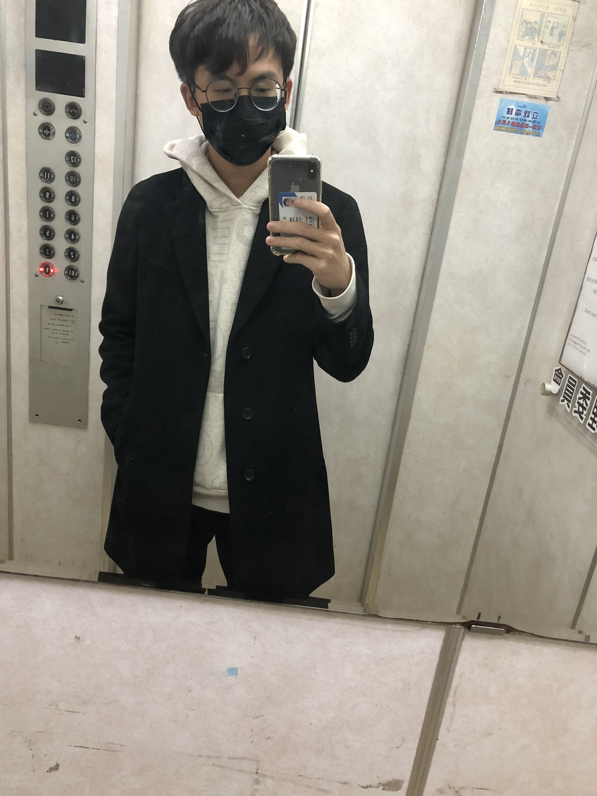

謝進奕 (Hsieh Chin-Yi)
Higher Education
Master ,
Institute of Computer Science and Engineering
,
National Yang Ming Chiao Tung University
Thesis: TBA
Adviser: Prof.
Tian-Shyr, Dai
Talks and Presentations
Learning_rate Optimizer
Paper Presentation_TS2Vec_Towards Universal Representation of Time Series
Paper_presentation_Modeling Irregular Time Series with Continuous Recurrent Units